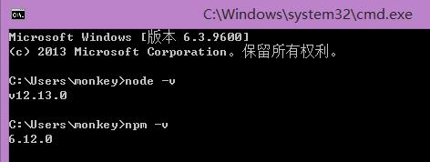
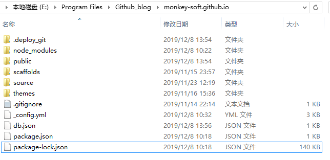
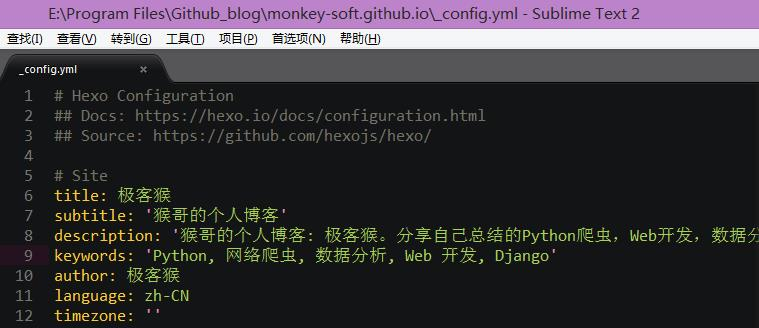
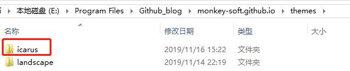
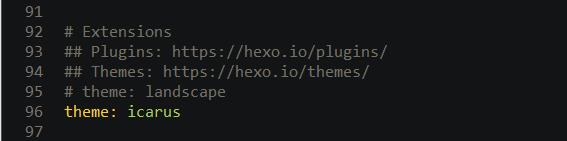
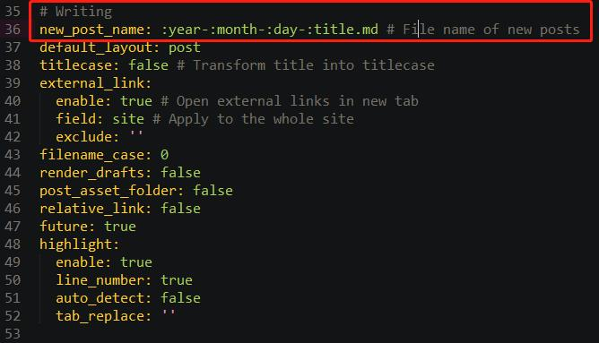
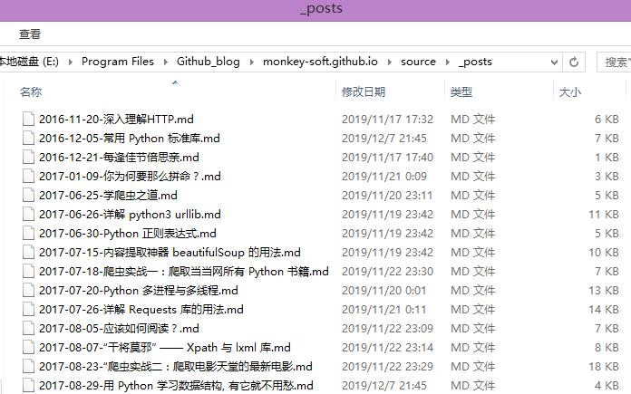
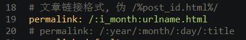

我之前写过一篇文章《利用Github+Jeklly搭建个人博客网站》，利用 Github 仓库提供的 github pages 来搭建个人博客。Jekyll 和 Hexo 可以说是最受欢迎、用户都非常多的两个静态博客生成系统。本文给大家介绍利用 Hexo 结合 Github pages 来搭建个人网站。
1.什么是 Hexo？
Hexo 是一个基于 node.js 制作的快速、简洁且高效的博客框架。Hexo 可以将我们撰写的 Markdown 文档解析渲染成静态的 HTML 网页。
2.Hexo VS Jeklly
2-1.本地环境
Jeklly 是由 Ruby 语言编写，需要到官网下载并安装 RubyInstaller。Hexo 则需要安装 Node.js 环境。网上经常看到很多人吐槽安装 Jekyll 经常碰到各种问题。我分别在 Windows 下安装过这两个环境。整个流程跑下来还是挺顺利的。
2-2.速度
说是比较 Hexo 和 Jeklly 这两个框架，其实要比较 Ruby 和 Node.js 的运行速度。Node.js 是一个 Javascrip t运行环境(Runtime)。实际上它是对 Google V8 引擎进行了封装。众所周知，Google JS Runtime 速度非常快，性能非常好。在本地预览上，Jekyll 是生成了页面然后进行预览，而 Hexo 是没有在根目录生成文件的，速度也快不少。因此，Hexo 在性能和速度上面更胜一筹。
2-3.部署
Jeklly 是将整个工程源码上传到 Github 仓库，然后 Github 会自动生成静态文件。而 Hexo 需要事先在本地生成整个站点页面，再将 Html 文件、资源文件等上传到 Github 上。
2-4.主题
Jekyll 使用 Liquid；它是有 Ruby 语言编写的开源模板语言。Hexo 使用的是 EJS；EJS 是 JavaScript 模板库，用来从 JSON 数据中生成 HTML 字符串。EJS 相对比较复杂，所以可实现的功能更加的多。从开发一个主题难度上看，Hexo 实现起来更方便、更简单些。
2-5.生态
一个产品能不能快速上手，要看其生态圈是否完善。在文档说明配套方面，Hexo 更加完善。我们能在 Hexo 官网上找到中文的文档说明。Jeklly 的中文文档还是广大网友自发组织翻译的。从主体方面上看，Hexo 官网就有主题跳转链接，目前一共有 280 个主题；这 Jeklly 是无法比拟的。再者，相比 Ruby，Node.js 使用的人群更广, 火爆程度更好。因此，我们通过搜索引擎搜索问题时，搜到 Hexo 的资料量会大于 Jeklly，这也是造成网友吐槽 Jeklly 的原因。
3.创建 Github 项目
我们是将网页托管到 Github Pages 上，这部分就不再花篇幅去详细介绍，具体可以参考《利用Github+Jeklly搭建个人博客网站》的内容。简单来说，就是创建一个 Github 项目，项目名称命名格式是 username.GitHub.io。
3-1.搭建本地 Hexo 环境
首先我们需要到 Node.js 官网，根据自己系统平台以及系统版本下载 Node.js 安装包，安装的时候记得将 node.js 添加到系统变量中。
安装后，分别以下命令来检测 Node.js 和 npm 是否安装成功

能看到版本号，说明 Node.js 环境安装成功。然后我们使用 npm 来安装 Hexo。
1 | $ npm install -g hexo-cli |
3-2.构建本地项目
在本地磁盘中，创建一个名为 Github_blog 的文件夹，用来保存网站项目的文件。接着，通过终端执行命令来初始化 Hexo 工程。
1 | $ hexo init monkey-soft.github.io # 创建工程名，随意命名 |
执行完命令之后，我们能看到 Github_blog 多出一个 monkey-soft.github.io 的子文件夹，里面还有 Hexo 默认生成的文件。

- deploy_git
Hexo 借助 Git 推送网站信息到 Github 仓库所生成的文体。 - public
执行生成站点文件的命令，即hexo g，Hexo 将自动生成静态网页和资源文件都保存到这里 - scaffolds
模版 文件夹。当我们新建文章时，Hexo 会根据 scaffold 来建立 Markdown 文件。 - source
里面有个_posts文件夹，存放着我们以 Markdown 语法创造内容的文件。 - themes
Hexo 主题存放的文件夹 - _config.yml
Hexo 项目的配置文件，配置网站的基本信息、网页 URL 路径、时间格式、文章分页、扩展插件等信息。这里的 Site 配置建议都修改下。

4.主题选择
当我们创建 Hexo 项目之后，项目中默认会有一个名为 landscape 的主题。如果你觉得默认主题不够美观，可以自行到 Hexo 官网选择适合自己的主题。为了方便大家选择，猴哥推荐 10 大明星主题。排名根据目前 Github 上 Star 数依次降序排列。
【iissnan / hexo-theme-next】 Stars：14.9K
【litten / hexo-theme-yilia】 Stars：7.1K
【theme-next / hexo-theme-next】 Stars：4.6k
【viosey / hexo-theme-material】 Stars：3.8K
【tufu9441 / maupassant-hexo】 Stars：2.1K
【LouisBarranqueiro / hexo-theme-tranquilpeak】 Stars：1.6K
【blinkfox / hexo-theme-matery】 Stars：1.4K
【ahonn / hexo-theme-even】 Stars：1.1K
【forsigner / fexo】 Stars：1K
【fi3ework / hexo-theme-archer】 Stars：942
萝卜青菜各有所爱，猴哥选择一款名为 icarus 的小众主题。如果你也想使用同款主题，在公众号回复关键字【hexo】即可获取。
将从 Github 上下载的主题，复制到 theme 文件夹中。

最后需要在 _config.yml 指定 Heox 主题。

5.开始写作
在source\_posts目录下，新建一个 .md 文件。默认的命名方式是 year-:month-:day-:title.md。如果你想修改这个命名规则，可以在 Hexo 目录下的 _config.yml 文件中，找到 # Writing 字样，然后进行修改。

不过我不建议修改这命名规则，这格式能一目了然。知道我们创作文章是什么时候？文章的标题是什么？

创建 md 文件之后，需要在文件头部指定一些信息。
1 | --- |
6.SEO 优化
关于固定链接，还是“三不二建”的套路。
1.日期不要出现在固定链接中。会让搜索引擎爬虫认为是过期内容，导致不再爬取
2.链接的层次不要太深。默认的固定链接是 /年/月/日/文章名。这种层次过深，不方便搜索引擎爬虫的抓取，对搜索引擎的收录不太友好。
3.链接中不要出现中文。
4.建议使用 post_id 形式来设置固定链接。
5.建议使用英文缩写或英文来设置固定链接。
不得不说， Hexo 很人性化，有考虑到网站开发者会做 SEO 优化工作，在模板语言的可选变量中就有 id 选项。因此，设置 post_id 的链接方法有两种。
这里直接利用 :id（文章ID） 变量能实现效果。针对以上两种建议优化，我给出一个兼容两者的方案。Hexo 目录下的 _config.yml 文件中，修改永久链接的显示方式。

这里 :urlname 变量可以显示为数字或者英文内容。我为了实现 post_id 形式，同时保证 post_id 有一定的跳跃性，在 id 后面拼接个月号数。
接着，在 md 文件的头部信息中，需要增加一个 urlname 字段， 设置文章的 id 号。
1 | urlname: 1 |
如果文章的名字是 2019-12-16-titie.md，那么显示的永久链接是 121.html
网站有说法是百度搜索对 Hexo 站点搜索不友好，原因是百度搜索屏蔽了 Github pages。但其实也是有方法来规避这种规则。
用户一般是通过关键字从搜索引擎搜索我们网页内容，所以我们需要给页面设置关键字和页面描述，能命中用户搜索的关键字。当然前提是要被搜索引擎收录。
首先，在 md 文件中，增加两个字段。
1 | keywords: [关键字1, 关键字2, 关键字3] |
然后分别到百度搜索引擎提交入口和谷歌搜索引起提交入口，提交自己的域名地址。在这里之前，建议先购买一个域名，然后在 Github 设置域名重定向。
百度域名提交地址：传送门
谷歌域名提交地址：传送门
我们这么做是化被动为主动。自己网站会被搜索引擎爬虫收录，但不知道等到猴年马月。不如我们主动出击，自己主动我们网站地址，让搜索引擎知道我们网站，会加速收录速度。
7.个性化优化
Hexo 很多主题可玩性很高， 如果你感兴趣可以感觉个人喜好对主题内容进行一些定制化修改。这里涉及主题比较多，就是一一讲解。大家可以通过 Github 主题说明文档以及搜索引擎来了解相关信息。